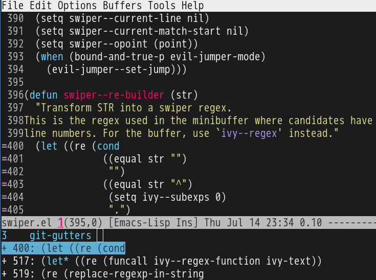

Enhance emacs-git-gutter with ivy-mode
CREATED:
UPDATED:
emacs-git-gutter shows an icon in the gutter area. The icon indicating whether a line has been inserted, modified or deleted in Emacs.
I usually use M-x git-gutter:previous-hunk or M-x git-gutter:next-hunk to navigate between the hunks.
But if there are too many hunks in one file, ivy-mode is more efficient:
(require 'ivy)
(require 'git-gutter)
(defun my-reshape-git-gutter (gutter)
"Re-shape gutter for `ivy-read'."
(let* ((linenum-start (aref gutter 3))
(linenum-end (aref gutter 4))
(target-line "")
(target-linenum 1)
(tmp-line "")
(max-line-length 0))
(save-excursion
(while (<= linenum-start linenum-end)
(goto-line linenum-start)
(setq tmp-line (replace-regexp-in-string "^[ \t]*" ""
(buffer-substring (line-beginning-position)
(line-end-position))))
(when (> (length tmp-line) max-line-length)
(setq target-linenum linenum-start)
(setq target-line tmp-line)
(setq max-line-length (length tmp-line)))
(setq linenum-start (1+ linenum-start))))
;; build (key . linenum-start)
(cons (format "%s %d: %s"
(if (eq 'deleted (aref gutter 1)) "-" "+")
target-linenum target-line)
target-linenum)))
(defun my-goto-git-gutter ()
(interactive)
(if git-gutter:diffinfos
(ivy-read "git-gutters:"
(mapcar 'my-reshape-git-gutter git-gutter:diffinfos)
:action (lambda (e)
;; ivy9+ keep `(car e)'
;; ivy8- strip the `(car e)'
;; we handle both data structure
(unless (numberp e) (setq e (cdr e)))
(goto-line e)))
(message "NO git-gutters!")))
Screenshot:
